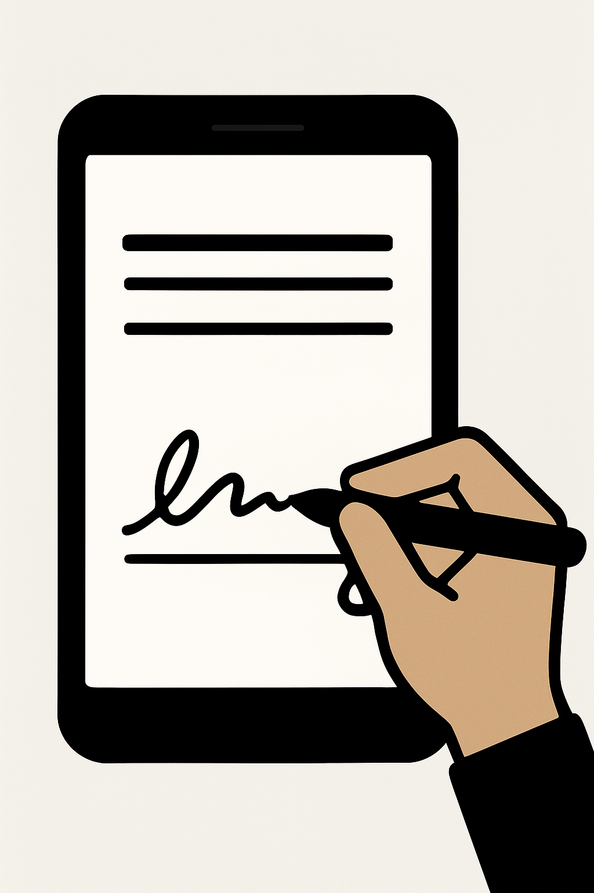

Using a Mac
- Open your email in Mail or a web browser and select the message with the PDF attachment.
- Hover over the attachment and click the download arrow; choose where to save it in Finder and click Save.
- Open the saved PDF from Finder and type your information into the fields.
- In Adobe Acrobat or Preview, click the Fill & Sign tool; click "Sign" then "Add Signature".
- Type, draw, or import your signature, click Apply and drag it into place.
- Save the PDF and attach it to your reply email.



Back